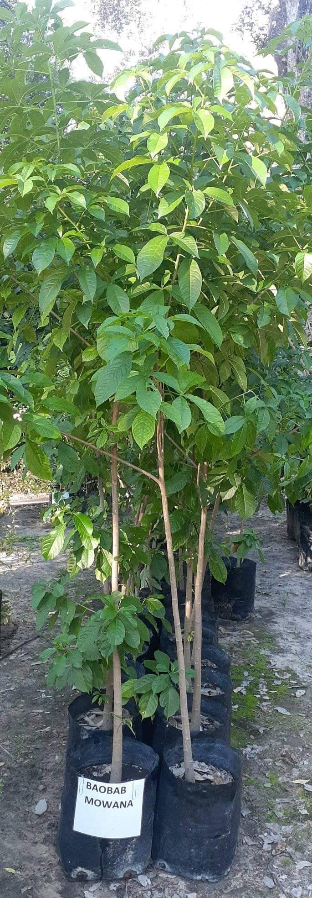

We hold weekly workshops in different areas.
Which is your nearest school?
- Manama Primary
- Bengo Primary
- Monyabetsi Primary
- Nhwali Primary
- Seboza Primary
- Nhanha Primary
- Mkhalipe Primary
- Fumukwe Primary
- Bethel Primary
- Nzenya Primary
Who is your kraal head?
- Makwati
- Nyakalalo
- Maphala
- Mokgatho
- Madida
- Moshe
- Thamaga
- Mashangule
How to do small grain production
Thinning forests prompted me to create this site.
And today we will fix our forest
Cereals to consider
The best cereal crops for our dry and hot region are sorghum, pearl millet and finger millet as these have proven to be climate hardy crops which are grown in harsh conditions. These crops will enable us as farmers to manage our natural resource base in a sustainable manner using integrated soil fertility and crop-livestock systems management. Macia and Segaolane are the most commonly produced sorghum varieties. ‘Local Landrace Variety’ is the best pearl millet variety.
Calendar which is most suitable
Actual planting is done when we receive the first rains. However, pre-season ploughing (ukuphendula) should be done well in advance usually in the month of October. This is necessary to mix the soil with crop residues from the previous farming season as well as to bury any manure which might have been applied. It is also important in order to bury seeds of weeds (this has been shown to reduce the incidence of weeds).
Farming technologies to implement
There are many different planting systems available, however I recommend intercropping cereals with legumes with watermelons. This has many advantages which include, but not limited to;
- it has security against crop failure,
- it helps in preventing pests and diseases to spread throughout the field,
- it increases soil fertility, reduces soil depletion and increases soil fertility
- it reduces the need for fertilizers
- it also helps in controlling weeds and controls the growth of pathogens and pests in crops.
I recommend the traditional tilling system using over “ugatshompo” as these has less labour and covers more land per unit time.
Seed rates/ planting populations
For sorghum and both millet types, the recommended seed rate is 15 kg /ha (15kg is approximately a ‘bucket’). The recommended spacing for sorghum is 75 cm between rows and 15-20 cm between plants in a row. The recommended spacing for millet is 75 cm inter-row and 20 – 30 cm in-row.
Weed management and Thinning
Normally 2-3 hoe-weeding regimes are is encouraged as these cereals and legumes are very sensitive to weeds. Thinning should be done to establish an in-row spacing of 15-20 cm and this should be done before tilling begins and is normally done 4 weeks after emergence. At this stage it is also recommended to fill in for the seeds that that did not germinate or seedlings that were affected by diseases.
Harvesting
Sorghum is normally harvested when plants reach physiological maturity. Leaves will be yellowish and beginning to dry up naturally. Pearl millet is ready for harvest 3- 4 weeks after flowering and it is stored unthreshed or threshed in graineries. The grain is treated with insecticides such as Malathion, Lindane.
Market
These cereals are sold to local households, local millers and large companies such as Lesedi Holdings and Delta. The downside of selling to these big companies is that they usually buy large quantities of grains.
Common pests for cereals
Shoot fly
Feeding larvae cause drying up of central leaf and dead heart symptoms in 1-4 weeks seedlings. It is controlled by timely planting, use of high seed rates. One can also use the following chemical control methods of using thionex or carbaryl.Stalk borer
Penetrate stem through funnel at any stage of growth. Use chemicals like endosulfan, carbaryl, thionex, carbofuran.Birds
The most common ones are the red –billed weaverbird and Quelea bird. They remove sown seeds or seed from panicle. Less damage when crop mature at same time or on extensive sorghum fields. Scaring is the answer to the problemStray livestocks
These cause the greatest damage and losses. These are mainly cattle, goats and donkeys. Proper fencing of the fields is the most recommended way of controlling them.Common diseases for cereals
I will only cover the two most common diseases. Stalk rots Irregular molted pattern within internodes especially on peduncle. Crop rotations, clean cultivation and destroying residues are the recommended methods. Downey mildew Infected seedlings are chlorotic, stunted and may die pre maturely. Treat seed metaloxyl, deep ploughing, use resistant varieties.
TREE PLANTING CHALLENGE
I can also plant my tree!!!!
Please rush and get a seedling to plant
Available trees
- Mnyi/Mntsintsila
- Xakuxaku
- Mviyo
- Mkhomo
- Mablonsi / Mulberry
- Guava
- Pintshisi / Peach
- Mganu / Murula
- Mango
- Bilebile
Did you know?
- Agriculture uses up 70% of our global freshwater. It goes up to 90% in fast-developing countries.
- 70% of our planet is covered by water. However, out of 70 percent, only 2.5 percent is fresh and what is accessible for human use is 1%.
- According to various reports, we’ve added nearly 2.4 trillion tons of Carbon dioxide into the atmosphere. Half of this huge amount was emitted in the last 35 to 50 years.
- Rainforests are being cut down at the rate of 100 acres per minute.
- Soil is more than just dirt — it’s practically a living organism! One handful of healthy soil contains billions of micro-organisms that are critical to storing gases, breaking down and retaining nutrients, and growing healthy plants!